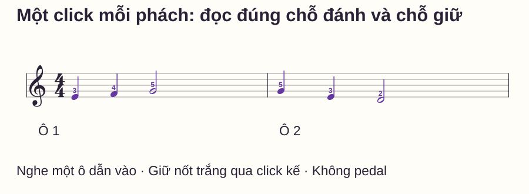
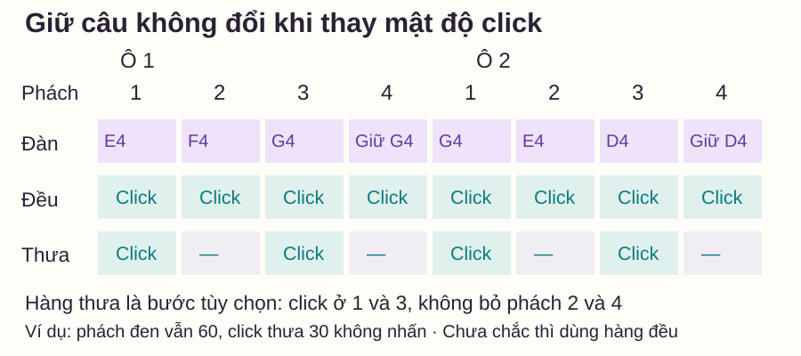
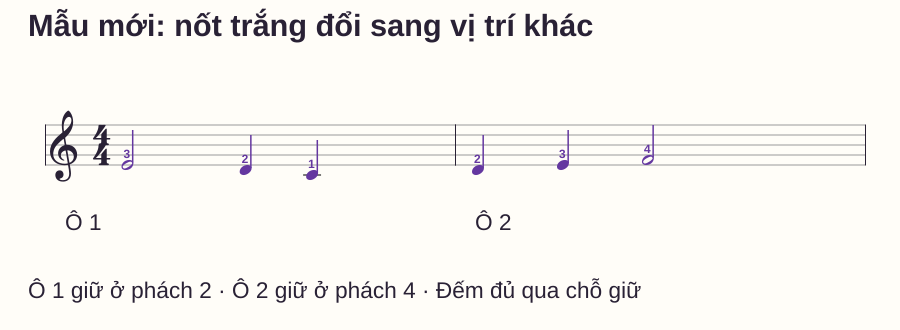

Nhịp và tiết tấu
Tập piano với metronome: giữ nhịp mà không đuổi theo click
# Tập piano với metronome: giữ nhịp mà không đuổi theo click
Bạn bật máy đếm nhịp, nghe một tiếng rồi mới bấm phím theo. Sau vài nốt, tay chậm hơn máy; tới chỗ khó thì dừng, còn máy tiếp tục chạy. Tăng âm lượng click không giải quyết được việc nốt nào cần chuẩn bị trước và nốt nào chỉ cần giữ.
Bài này dùng một câu tay phải trong vùng năm phím. Bạn sẽ ghép tiếng đàn với nhịp đều, nghe khác biệt giữa phách và điểm đánh, rồi thử một câu mới. Không cần thiết bị đặc biệt: máy cơ, metronome trên đàn hoặc ứng dụng có tiếng click đều có thể dùng cho nhiệm vụ này.
Trả lời nhanh
Khi mới tập piano với metronome, hãy chọn một đoạn đã đọc rõ nốt và đặt mỗi click bằng một phách đen. Nghe một ô dẫn vào, đếm cùng máy rồi bắt đầu đúng điểm đã chọn, thay vì chờ nghe click mới tìm phím. Trong mẫu 4/4, nốt trắng giữ hai phách nên click thứ hai không tạo tiếng đàn mới. Nếu bạn liên tục chậm ở một chỗ, dừng lượt, học riêng chỗ đó rồi thử lại ở tempo đủ để chuẩn bị. Chỉ tăng tốc khi vẫn giữ đúng nốt, điểm vào và độ dài; số BPM cao hơn không tự chứng minh tập tốt hơn.
Phách đều không có nghĩa mỗi click đều bấm một nốt
Metronome cho mốc thời gian lặp lại đều. Sheet cho biết tiếng đàn bắt đầu ở mốc nào và giữ tới đâu. Hai thông tin này có liên hệ nhưng không trùng hoàn toàn: một nốt có thể kéo qua nhiều click; nhiều nốt ngắn cũng có thể nằm trong một phách.
Trong bài này, nhịp 4/4 có bốn phách đen. Nếu đặt 60 BPM và mỗi click là một phách đen, mỗi phách dài một giây. Đây là ví dụ để hiểu đơn vị, không phải tempo bắt buộc cho mọi người. Chọn mức bạn có thể gọi và chuẩn bị nốt kế trước điểm vào.
Yamaha — 4 Essential Metronome Exercises to Improve Your Timing xem metronome như một đối tác luyện thời gian và có các bài tạo khoảng trống giữa click. Bài nhập môn dưới chỉ bắt đầu từ click từng phách; phần giãn click là bước tùy chọn sau đó, không phải yêu cầu ngay buổi đầu.
Chuẩn bị câu hai ô, một tay
C4 là Đô giữa. Đặt tay phải ngón 1–5 trên C4–D4–E4–F4–G4; ngón 1 là cái, ngón 5 là út. Không dùng pedal. Đọc và thử nốt khi chưa bật máy để biết nhiệm vụ của ngón trước.

| Ô | Phách 1 | Phách 2 | Phách 3 | Phách 4 |
|---|---|---|---|---|
| 1 | E4, ngón 3 | F4, ngón 4 | G4, ngón 5 | Giữ G4 |
| 2 | G4 đánh lại, ngón 5 | E4, ngón 3 | D4, ngón 2 | Giữ D4 |
Nghe một ô dẫn vào rồi cùng bắt đầu
Để máy chạy vài click. Chọn một click làm số 1 và đếm một ô “1–2–3–4”. Sang số 1 tiếp theo, chơi E4. Việc bắt đầu theo một ô dẫn vào giúp bạn biết trước điểm vào, không cần phản ứng với từng click như một lệnh bất ngờ.
Nếu máy có nhấn đầu ô, đặt bốn phách và thống nhất số 1 với tiếng nhấn. Nếu không có nhấn, vẫn có thể tự đếm nhóm bốn. Đừng vô tình bắt ở tiếng máy đang gọi là số 3 rồi dùng tiếng nhấn sau đó làm số 1 mới.
Lượt đầu có thể chỉ gõ một điểm trên mặt bàn theo từng phách và đếm, chưa đàn. Sau đó chơi riêng ô 1. Tới G4 ở số 3, giữ phím qua click số 4; không nhả ở 4 và không bấm lại G4 tại đó.
Lưới click: biết lúc đánh, lúc giữ

Ghép cả hai ô. Chú ý hai điểm dễ lẫn: số 4 ô 1 chỉ giữ, nhưng số 1 ô 2 có G4 mới. Cuối ô 2, giữ D4 tới số 1 tưởng tượng của ô 3 rồi nhả; không đánh thêm một nốt để đánh dấu kết thúc.
Nếu bị chậm trước G4 đầu ô 2, kiểm chính chỗ qua vạch: tay có nhả và đánh lại đủ gọn không, hay bạn đang đợi xong ô 1 mới đọc ô sau? Có thể tập riêng phách 3–4 ô 1 nối 1–2 ô 2, sau đó quay lại câu đầy đủ.
Khi nào dừng để sửa, khi nào đọc liền?
Ở lượt học nốt, được tắt máy và dừng để tìm lại vị trí. Ở lượt kiểm nhịp, chọn một đoạn đủ ngắn để thử đi hết rồi ghi chỗ lệch. Nếu đã mất hẳn vị trí, dừng và đặt lại; không cố bấm nhanh nhiều nốt để “đuổi kịp” số click đã qua.
Thay đổi một việc: tempo, độ dài đoạn hoặc số nhiệm vụ. Đừng cùng lúc bật máy nhanh hơn, ghép trái và thêm pedal rồi không biết lỗi đến từ đâu. Sau lượt sửa, chơi lại đúng đoạn có chỗ chuyển, không chỉ lặp riêng nốt cuối đã biết.
Không cần click to tới mức che tiếng đàn. Bạn phải nghe được cả mốc và câu nhạc để nhận nốt giữ, nốt mới, tiếng vào lệch hoặc nốt bị bỏ.
Mẫu mới để kiểm việc đọc đúng thời gian

Trước đáp án, hãy nói ô nào có giữ ở phách 2, ô nào có giữ ở phách 4 và câu có bao nhiêu điểm tạo tiếng. Sau đó nghe một ô dẫn vào rồi thử ở cùng tempo kiểm soát được.
Đáp án
Ô 1 E4 bắt đầu ở 1, giữ qua 2, D4 ở 3 và C4 ở 4. Ô 2 D4 ở 1, E4 ở 2, F4 ở 3 giữ qua 4. Tổng sáu điểm tạo tiếng. Nốt trắng giữ hai phách dù nó nằm ở đầu hay cuối ô.
Bước tùy chọn: hai click nhưng vẫn bốn phách
Khi đã rõ câu cơ bản, có thể để máy chỉ gõ ở phách 1 và 3. Giữ nguyên tốc độ phách trong đầu. Ví dụ từ click từng phách ở 60, dùng click đều không nhấn ở 30 và tự gọi chúng là 1, 3, 1, 3. Phách đen của câu vẫn tương ứng 60, không kéo cả câu chậm đi một nửa.
Đây là cách đổi vai trò mỗi click, không phải hai BPM mang cùng ý nghĩa. Nếu máy có nhấn chu kỳ bốn click, chu kỳ đó sẽ không còn trùng một ô nhạc trong cách đặt này; dùng tiếng đều không nhấn hoặc cấu hình phù hợp. Chưa chắc thì quay về một click mỗi phách.
Routine mười phút và bảng lỗi
- 0–2 phút: đọc câu cơ bản và xác định sáu điểm tạo tiếng khi chưa bật máy.
- 2–4 phút: đếm cùng click, tập một ô dẫn vào và riêng ô 1.
- 4–6 phút: nối hai ô, kiểm giữ ở 4 và đánh lại ở đầu ô sau.
- 6–8 phút: sửa một chỗ lệch rồi thử lại cả câu ngắn.
- 8–10 phút: đọc mẫu mới và ghi lỗi là nốt, điểm vào hay giữ/nhả.
| Biểu hiện | Điều cần kiểm | Thử sửa |
|---|---|---|
| Mỗi nốt đều hơi sau click | Có chờ nghe rồi mới chuẩn bị? | Dùng ô dẫn vào và xác định đích trước lượt |
| Bấm G4 thêm ở số 4 | Có coi click là lệnh đánh? | Chỉ giữ G4 qua click ấy, không tạo tiếng mới |
| Qua ô sau mất nhóm bốn | Có đọc và đếm đúng vạch ô? | Nối đoạn 3–4–1–2 rồi trả lại hai ô |
| Chơi nhanh vài nốt để bắt kịp | Đã mất vị trí nhưng cố đuổi máy? | Dừng, đặt lại và chọn đoạn ngắn hơn |
Mở rộng khi bạn bắt được từ ô 2, giữ đúng các nốt trắng và đọc mẫu mới mà không chèn thời gian chờ. Không cần tăng BPM sau mỗi buổi hoặc đạt hàng click thưa ngay hôm nay.
Đọc thêm
Phách và tiết tấu phân biệt mốc đều với hình nhịp. Cách đếm nhịp ôn trường độ. Chia và nối đoạn giúp sửa đúng chỗ chuyển bị lệch.
Nếu click vẫn quá khó vì nhiều nhiệm vụ cùng mới, dùng cách chọn bản piano đầu tiên để tìm phiên bản phù hợp hơn trước khi tăng tốc.
Câu hỏi thường gặp
Người mới phải bắt đầu ở 60 BPM không?
Không. 60 chỉ là ví dụ dễ hiểu đơn vị. Chọn tốc độ đủ để bạn chuẩn bị đúng nốt và nghe được việc giữ/đánh trong đoạn đang tập.
Click có phải luôn bằng nốt đen không?
Không. Nhưng bài này bắt đầu bằng quy ước đó. Khi đổi đơn vị click, phải xác định rõ nó đại diện cho phách hoặc phần chia nào.
Có phải tập với máy trong toàn bộ buổi?
Không. Tách lượt học nốt, lượt ghép với mốc và lượt tự nghe không máy theo mục tiêu. Không để việc bật máy trở thành cách tránh kiểm kỹ chỗ chưa đọc được.
Chơi sai có nên tăng tốc để bắt kịp không?
Không dùng cách đó để sửa chỗ đã mất vị trí. Đặt lại đoạn ngắn và đếm dẫn vào; nếu chỉ một lỗi nhỏ trong lượt đọc liền, ghi lại để sửa riêng sau.
Vì sao chơi đúng với máy mà tắt đi lại lệch?
Cần kiểm khả năng tự giữ nhóm phách và trường độ, không chỉ phản ứng theo click. Thử đoạn ngắn không máy; bài click thưa là bước thêm sau khi nền đã rõ.
Metronome có làm câu nhạc máy móc không?
Click dùng để kiểm một lớp thời gian. Nó không thay nhiệm vụ nghe câu, sắc thái và chỉ dẫn biểu cảm; mẫu luyện này chưa đại diện mọi xử lý tempo của tác phẩm.
Nguồn và ghi chú biên soạn
- Yamaha — 4 Essential Metronome Exercises to Improve Your Timing, Dave Gerhart: tham khảo cách xem click như đối tác và tạo khoảng trống. Kiểm ngày 28/10/2026.
- Hai câu nhạc, lưới, quy trình nhập môn, routine và tiêu chí là thiết kế riêng; không chép worksheet nguồn. Chưa có giáo viên độc lập review hoặc thử nghiệm học viên, không cam kết tăng tốc sau một số ngày.